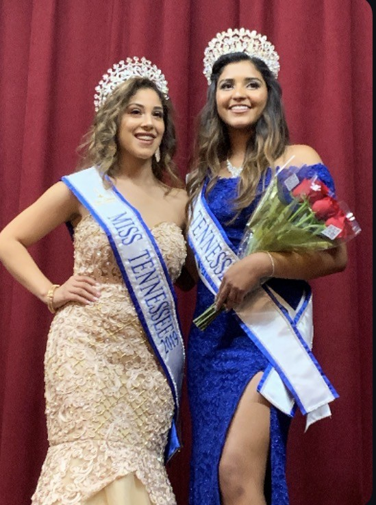

Hi! I’m Bella Matute, a pre-business student at Brigham Young University with interest in business, law, and real estate. My academic and professional experiences have centered on business fundamentals, as well as structures that shape property and investment markets.
Through various roles, I’ve developed strengths in client communication, professional judgment, and navigating complex decisions with discretion. These experiences have deepened my interest in the legal dimensions of business particularly contract law, property rights, and the compliance frameworks that underpin real estate and investment transactions.
After earning my Associate’s degree in Business Management, I am continuing my studies with a focus on strategic management. I plan to pursue law school following graduation, with the goal of specializing in property law. Long term, I aim to advise clients and organizations on decisions where legal strategy and financial outcomes are closely connected.
See the good in everything.
